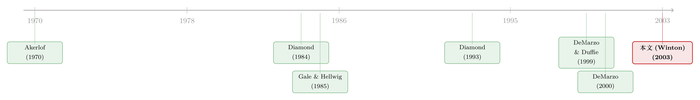

迟早要卖手里的资产，于是他只敢拿债，不敢拿股
本文读的是 Winton (2003, Review of Financial Studies)：一个会「监督」企业的金融机构，因为掌握了别人不知道的私有信息，将来用这些资产去变现救急时会撞上 Akerlof 的「柠檬」问题；要让这道变现成本最小，它最好持有债而不是股——因为一块钱的债比一块钱的股「更平」，更不暴露机构的私有信息。由此可以推出一整套关于银行、财务公司、寿险、养老金谁该多拿债、谁敢多拿股的横截面规律。
1 一个被忽略的常识
我们先从一个几乎所有人都默认、却很少有人追问的常识说起。
银行、财务公司、寿险公司这些金融机构，资产负债表上压倒性地是债，而不是股。教科书给的解释通常是「分散化的代理监督者既发债也持债」（CSV，即 costly state verification 那条线），或者「监管不让银行持股」。这些解释都对，但它们都有一个共同的盲点：它们说的是一张静态的资产负债表，回答不了一个更细的问题——
为什么同样是「监督型金融」(monitored finance)，养老金和寿险敢拿相对多的股，而商业银行和财务公司几乎只拿债？为什么银行的贷款比财务公司的更安全？为什么大银行反而比小银行敢持更多股？
这些都是横截面的差异。一个只讲「债能省核查成本」的模型，是说不清这些差异从何而来的。Winton 这篇 2003 年的论文，把这条暗线一路挖到了底：他指出，决定机构资产结构的，不是核查成本，而是机构自己将来要变现救急时的那道逆向选择成本。
接着，一个自然的问题是：这道成本到底从哪里冒出来？
2 故事的张力：知道得太多，反而卖不掉
按 Diamond (1984)、Ramakrishnan and Thakor (1984)、Boyd and Prescott (1986) 的经典图景，金融机构是一个被授权的监督者 (delegated monitor)：它从投资者手里募来资金，替他们去挑选、监督企业。这件事有两个直接后果，而 Winton 全文就建在这两个后果的张力之上。
第一，信息不对称的方向反过来了。 既然机构在监督它投资的企业，它对这些企业的了解，就超过了把钱交给它的那批投资者。它知道哪笔贷款其实快坏了，哪家企业其实前景很好。
第二，机构是拿「别人的钱」在做生意。 企业随时会来要融资，投资者随时会来赎回资金。机构必须持续地满足这些「流动性需求」(liquidity needs)，否则生意就做不下去。
把这两点放在一起，麻烦就来了。当机构需要现金、想卖掉手里一部分被监督的资产（或用这些资产做抵押发新券）时，它对资产质量的私有信息立刻变成一个 Akerlof (1970) 式的逆向选择、也就是「柠檬」问题：
机构的信息越好，它越不舍得按「平均质量」的价格把资产卖出去。投资者预料到这一点，于是压低买价；价格一压低，好资产更不愿卖——恶性循环。结果是：机构平均拿不到资产的全部价值，一部分流动性需求被迫落空，这就是流动性成本 (liquidity costs)。
于是，问题从「该不该持债」变成了一个更锋利的问题：什么样的资产结构，能让机构将来变现时被「柠檬折价」啃掉的肉最少？
（关于逆向选择如何从买卖价差里渗进资产的「要求回报」，可参见《价差是真的，成本却是假的——逆向选择究竟从哪里抬高了「要求回报」》。）
3 模型设定：一家公司、一个机构、三个时点
Winton 把这个直觉装进了一个极简的三期模型。我们一步步把它讲清楚。
企业。 一位经理拥有一家公司，运营三期 \(t=0,1,2\)。\(t=0\) 时公司需要投资 \(I\)。经理自己没有钱，必须向外部融资。若公司一直运营到 \(t=2\)，则要么成功、产生现金流 \(X>I\)，要么失败、现金流为 \(0\)。若在 \(t=1\) 被清算 (liquidated)，资产可变现 \(L\)，其中 \(L
\(t=0\) 时成功概率公开已知为 \(q\)。\(t=1/2\) 时经理免费观察到公司到底会成功还是失败；而投资者只能通过代价高昂的监督来更新信息：花费 \(m\)，监督者有 \(\gamma\in(0,1)\) 的概率学到经理所知道的，\(1-\gamma\) 的概率一无所获。
为什么非得有监督？ 下面这组假设把注意力限定在「不监督就没法融资」的企业上：
$$ \text{(i)}\quad (1-q)(L-C)+qX < I $$
$$ \text{(ii)}\quad \max\{qX,\,L\} < I $$
$$ \text{(iii)}\quad \gamma[(1-q)L+qX] + (1-\gamma)\max\{qX,\,L\} - m \ge I $$
直觉是这样的：(i) 说，就算「贿赂」经理、补偿他失去的 \(C\)、让他配合最优清算策略，剩下的现金流也不够投资者收回 \(I\)；(ii) 排除了「不监督」的两种笨办法——永远让它继续（期望现金流 \(qX\)）或永远清算（得 \(L\)）——都收不回 \(I\)；(iii) 则说，有一个投资者去监督、并据此相机清算或继续，是可以收回 \(I\) 的。三条合起来，逼出一个唯一可行的安排：必须有一个掌握控制权、并有动机去监督的机构。
融资工具。 经理可以发两种证券：债和股。债优先于股，面值为 \(D\)，须在 \(t=1\) 偿还；若不还，债权人有权接管公司，否则债被展期、\(t=2\) 偿还。股是次级的，由持股比例 \(\nu\) 刻画。若 \(D=0\) 机构持纯股，若 \(\nu=0\) 则持纯债。
4 关键一步：把「拿债还是拿股」翻译成「payoff 平不平」
现在到了真正关键的一步。Winton 先解出 \(t=1\) 时机构如何使用控制权（这是从后往前倒推的起点），结论浓缩在 Lemma 1 里：
机构在 \(t=1\) 持有面值 \(D\ge 0\) 的债和比例 \(\nu\ge 0\) 的股，它对公司成功概率的估计 \(p\) 有三种取值——监督成功且知道会失败（\(p=0\)）、监督成功且知道会成功（\(p=1\)）、没监督成功（\(p=q\)）。令 \(V(p,\nu,D)\) 为机构最优行动下的期望现金流：
$$ V(0,\nu,D) = \min\{L,\; D+\nu(L-D)\} $$
$$ V(1,\nu,D) = D+\nu(X-D) $$
$$ V(q,\nu,D) = \max\{V(0,\nu,D),\; q\cdot V(1,\nu,D)\} $$
第一式：若机构知道公司必败，它一定接管清算，拿到清算价值里属于自己的那块。第二式：若知道必成，威胁清算不可信，公司继续，机构拿债的本息加上股权分成。第三式：若没监督到，它在「威胁清算拿 \(V(0,\nu,D)\)」和「不威胁、让公司继续、以概率 \(q\) 拿 \(V(1,\nu,D)\)」之间取较大者。
于是反转出现了。 我们来看两种极端的资产结构，机构的 payoff 随状态 \(p\) 怎么变：
- 纯债，且 \(D\le L\)。 此时 \(V(0)=\min\{L,D\}=D\)，\(V(1)=D\)。也就是说，无论公司好坏，机构都拿固定的 \(D\)——payoff 在各状态之间是一条平线。
- 纯股（\(D=0\)）。 此时 \(V(0)=\nu L\)，\(V(1)=\nu X\)。因为 \(X>I>L\)，所以成功与失败两个状态下的 payoff 差了一大截。
这正是全文的核心机制：
一块钱的债，对公司风险的暴露小于一块钱的股。债让机构的 payoff 尽可能「平」，于是机构的私有信息「无处可用」——买家不会因为它知道 \(p=0\) 还是 \(p=1\) 而担心被宰，柠檬折价趋于零。股则相反：payoff 随状态剧烈起伏，机构的私有信息价值连城，柠檬问题最严重。
把这一步想透，整篇论文的所有结论几乎都顺流而下了。
5 机构的期望收益方程
把 Lemma 1 代回 \(t=0\)，机构以概率 \(\alpha\) 选择监督，它从企业拿到的期望支付为论文的方程 (1)：
机构再用监督概率 \(\alpha\) 去最大化「期望支付减去监督成本 \(\alpha m\)」。因为经理是通过竞争性拍卖来挑机构的，机构的偏好会完整地传导给经理：任何能降低机构预期流动性成本的结构，都会换来更低的融资成本。所以最后真正在「替机构省钱」的，其实是企业自己。
6 把核心讲透：债的成本优势随什么放大
到这里，论文不再罗列细节，而是反复把一个核心讲到底：债相对股的优势，到底取决于什么。答案是两条乘数。
第一，机构动用这份资产救急的频率越高，债越划算。 每动用一次，就撞一次逆向选择。频率越高，债把 payoff 抹平、省下的柠檬折价就越值钱。
第二，企业本身风险越大，债越划算。 企业越risky，机构持有的任何一种 claim（无论债还是股）都越risky，预期逆向选择成本越高；而债的「抹平」作用恰恰在这时最管用。
但 Winton 没有把话说死。他诚实地留了一个反例：当企业「死了比活着值钱」（清算价值 \(L\) 相对继续经营的期望现金流偏高）、且监督很「吵」（\(\gamma\) 不高、机构常常拿不到清晰信号）时，纯债反而有害——因为机构拿走全部清算所得、而继续经营的预期回报又低，它即便没拿到新信息也会忍不住去清算，白白毁掉经理的控制权私利 \(C\)。这时给机构多一点股、少一点债，能软化它清算的冲动。只要这份「保住的控制权私利」超过股权更高的流动性成本，经理就宁愿让机构持股。
这套苛刻的条件，恰好对上了现实里少数广泛使用私募股权融资的场景——风险投资 (venture capital)。早期企业失败概率高、清算价值（专利、团队）相对可观、信息又极其嘈杂，于是 VC 持股、并分阶段「修剪」企业（Sahlman (1990)、Fenn, Liang, and Prowse (1995)），就成了那个有限设定下的最优解。
（关于 VC 的回报与合约设计，可参见《VC 拿走的，从来不止「一半的饼」》。）
7 从单家公司到一张资产负债表
模型只盯着机构对一家公司的 claim，但结论可以放大到整张资产负债表，这才是它最有解释力的地方：
- 债应是主体，且对「市场准入差」的企业尤其如此。 企业越容易进公开市场，机构的私有信息越不重要、流动性成本越小；所以「债占绝对主导」这件事，在专门服务于难进市场的企业的机构身上最明显。
- 先用最流动的资产救急，把股和高风险债留到最后。 机构可以先动用流动资产，只在流动性需求特别大的少数时候才动用股/高风险债。于是：流动性需求越频繁、越严重的机构，应该持有越少的股和越少的高风险债。
这两条直接落到了那些「老常识」上，并且把它们解释得更细：私募融资以债为主；专做流动性供给的商业银行、财务公司、寿险持债远多于持股；养老金和寿险的资金期限长、再融资需求不那么频繁，所以（如模型所料）它们持有相对更多的股；商业银行比财务公司更专注流动性供给，所以银行的贷款更安全；大银行对来自不同客户的流动性冲击分散得更好，所以大银行确实持有相对更多的股。
注意这里的逻辑顺序：不是「监管不让银行持股」，而是「专做流动性供给 ⇒ 频繁撞逆向选择 ⇒ 内生地选择少持股」。同一个事实，换了一套因果。
8 模型论文里的一段精彩对话：与 DeMarzo–Duffie 的分工
要真正理解这篇论文的位置，得把它和最近的「邻居」DeMarzo and Duffie (1999) 摆在一起看——这也是全文写得最克制、最见功力的对比。
在 DeMarzo–Duffie 里，机构的资产分布是给定的（外生），它选的是将来用什么证券去融资：通常发债以最小化逆向选择，但流动性需求足够严重时也可能发股。一句话：他们研究的是流动性需求如何影响机构的融资结构。
Winton 把镜头掉了个方向：他研究的是流动性需求如何影响机构的资产结构——它该去持债还是持股、该贷给多risky的企业。两篇论文像一枚硬币的两面。
而且 Winton 还往前推了一步。DeMarzo–Duffie 假设投资者完全知道机构的流动性需求，于是均衡是分离的 (separating)：机构信息越好、寻求的融资越少，投资者据此完美反推。Winton 在 Section 3 放松了这个假设：若投资者对机构流动性需求的了解是有噪声的，就可能出现混同均衡 (pooling)——投资者看到机构少融资，分不清它是「需求严重+信息好」还是「需求不严重+信息差在模仿前者」。混同反而能降低预期流动性成本，因为此时需求严重的机构能拿到更接近 claim 期望价值的现金。关键是：claim 风险越低，混同越容易成立；而债比股风险低，所以这一层又一次强化了持债相对持股的流动性优势。
（DeMarzo 本人后来在 DeMarzo (2000) 里继续追问：知情中介该按「单只资产」还是「整个组合」发行被支持的证券——这条线的博客版可参见《把资产「打包」再「切片」：一个关于知情中介的模型》。)
9 文献脉络
把这条线从头捋一遍，会看到一个很清晰的演进。
最上游是 Akerlof (1970) 的柠檬市场——私有信息如何让交易萎缩。接着 Diamond (1984) 给出「被授权的监督」框架，说明为什么会有一个中介替众人去监督企业、并因此比出资人知道得更多。与此同时，另一条「成本核查」(CSV) 的线——Gale and Hellwig (1985)、Williamson (1986)、Krasa and Villamil (1992)、Winton (1995)——从核查成本的角度解释了为什么中介既发债也持债。
然后，Diamond (1993) 把控制权私利与债的相机清算装进合约，为「机构必须能强制清算、并有动机监督」提供了微观基础。真正的转折在 DeMarzo and Duffie (1999)：他们第一次把流动性需求 + 逆向选择作为证券设计的核心驱动力，回答机构该发什么券。

Winton (2003) 站在 DeMarzo–Duffie 的肩膀上，把问题从「发什么券」翻到「持什么资产」，并补上了「投资者对流动性需求信息有噪声 ⇒ 混同均衡」这一层。它和 DeMarzo (2000)、以及 Lucas and McDonald (1987, 1992)、O'Hara (1993)、Stein (1998) 这些「机构私有信息如何改写其行为」的工作，共同织成了一张关于知情中介的网。
10 评论与延伸（Q&A + 研究方向）
(a) 几个可能的疑问
Q：这和 CSV（成本核查）理论给出的「持债」预测，到底差在哪？
差在截面变化。CSV 模型抽掉了「中途资金需求会变」这件事，所以它只能预测「机构应只持债」这个静态结论，说不清谁该多持股、谁该少持股。Winton 的流动性模型把机构的流动性需求（进而其资金来源、投资者群体、对企业的流动性承诺）当作解释变量，预测的是债/股持有比例在机构间的横截面分布。
Q：既然债能抹平 payoff、几乎消灭逆向选择，那为什么世界上还有人持股？
因为债的「抹平」是有代价的：它让机构在清算决策上变得过于强硬。当企业「死了比活着值钱」且监督很嘈杂时，纯债会诱发过度清算，毁掉经理的控制权私利 \(C\)。多给股、少给债能软化清算冲动。只有这份保住的 \(C\) 超过股更高的流动性成本时，持股才最优——这套条件恰好刻画了 VC。
Q：模型只看一家公司，凭什么敢谈整张资产负债表？
这是它最该被追问的地方。从单 claim 到组合，Winton 靠的是一个直觉论证：机构会先动用最流动的资产救急，把股/高风险债留到流动性冲击最大的少数时刻。这个论证合理，但严格说需要一个多资产、有流动性冲击分布的组合模型来背书；论文里的组合层面结论更接近「stylized」的推演，而非完整证明。
Q：「混同反而降低流动性成本」是不是反直觉？
是，但站得住。分离均衡下，机构能立刻拿到的现金不超过其 claim 的最差取值；混同均衡下，需求严重的机构能拿到更接近期望价值的现金。代价是信息差的机构「搭了便车」。claim 风险越低（债），最好与平均取值之差越小，混同对信息好的机构越有吸引力——这又一次偏向债。
Q：那监管禁止银行持股的解释，是不是就被推翻了？
不是推翻，是「不必要」。Winton 说明，即便没有监管约束，纯粹从流动性成本出发，专做流动性供给的机构也会内生地选择少持股。监管约束与流动性机制可以并存，但后者能解释监管管不到的细节（比如银行贷款比财务公司更安全、大银行比小银行更敢持股）。
Q：这套逻辑对今天的公司债/信用市场还成立吗？
核心机制——「持有人将来要变现、私有信息制造柠檬折价、于是偏好低风险的 claim」——在今天的债券基金、保险公司身上依然鲜活。2020 年公司债的流动性危机里，正是那些被迫在坏天气变现的机构，最先尝到逆向选择与火线甩卖的苦头（可参见《一笔贷款长成什么样，取决于『未来谁来接盘』》）。
(b) 几个可能的研究问题与提案
1. 用债券基金的赎回冲击，检验「流动性需求 ⇒ 资产风险结构」这条因果。 - 【经济故事】Winton 预测：流动性需求越频繁/越严重的机构，越少持高风险资产。开放式公司债基金的赎回频率与久期错配，恰是「流动性需求强度」的天然代理。 - 【可行性】高。用 CRSP Mutual Fund + Morningstar 持仓 + TRACE 给债券打风险标签，以基金的流动性条款（申赎频率、是否带 swing pricing）做横截面，甚至用基金层面的赎回冲击做面板识别。数据齐全，识别可借助《基金越难脱手，它手里的债券越「抖」》那条流动性—脆弱性的思路。
2. 外资持有人的「流动性需求」是否解释了他们的资产风险偏好？ - 【经济故事】外资在本地市场的私有信息劣势 + 母国的赎回/再平衡冲击，构成一组与本地机构不同的「流动性需求」。Winton 框架预测他们会更偏好低风险、易变现的 claim。 - 【可行性】中。需要按持有人国别拆分的债券/股票持仓（如 TIC、ECB SHS、或新兴市场托管数据），用母国冲击作为流动性需求的外生来源。难点在于把「信息劣势」与「流动性需求」两条渠道分开。
3. 把「混同 vs 分离」搬到资产支持证券的发行数据上检验。 - 【经济故事】Winton 预测：投资者对发行人流动性需求的信息越嘈杂、且 claim 风险越低时，越容易出现混同均衡（发行人少发但拿到接近期望价值的价格）。 - 【可行性】中低。ABS/CLO 的发行规模、留存比例、tranche 风险可观测，但「投资者信息噪声」难以直接度量，多半要靠制度变化（如信息披露规则改革）做准实验。
4. 银行规模与持股比例：用分散化程度做识别。 - 【经济故事】Winton 说大银行因对异质客户的流动性冲击分散更好，敢持更多股。 - 【可行性】高。用银行 Call Report 的资产构成 + 客户/地域集中度（HHI）做横截面，并以银行合并、跨州放开作为分散化的外生变化（思路可借《在地图上画一条线：跨州县界如何重估了「银行松绑」的真实效果》）。
5. 公司债大宗交易中的「接盘人」与逆向选择折价。 - 【经济故事】当持有人因流动性需求甩卖债券，谁来接、折价多少，正是 Winton 柠檬机制的微观显影。 - 【可行性】高。TRACE 大宗交易 + 交易商身份，可直接量出折价随 claim 风险（评级、久期）的变化，检验「债比股折价小」的截面含义。
11 我的评判
这篇论文的贡献，在我看来不在于「又一次论证了机构该持债」——这个结论 CSV 理论早就给过——而在于它换了一根因果链：把机构的资产结构内生为「将来要变现救急时的逆向选择成本」，从而第一次把银行、财务公司、寿险、养老金、VC 的资产差异，统一在流动性需求强度这一个变量下。它和 DeMarzo–Duffie 的「资产外生、选融资」恰成镜像，分工干净；「噪声 ⇒ 混同 ⇒ 再次偏向债」那一层也漂亮。
对识别（在理论论文里，更准确地说是对「内部论证的稳健性」）我有两点担心。其一，从单 claim 到组合的跳跃：论文用「先卖流动资产」的直觉把单公司结论推广到整张资产负债表，但这一步缺一个显式的多资产、含流动性冲击分布的组合模型，结论更偏 stylized。其二，对「流动性需求」的处理偏外生：它是被当作随机的时间偏好冲击塞进来的，而现实中机构的资金来源结构、投资者群体本身就是机构选择的结果——把流动性需求也内生化，可能会改变债/股的权衡。
我接下来最想看到的，是有人把这套框架带到数据里：用债券基金的赎回冲击、外资持有人的母国冲击、或银行的分散化变化，去检验「流动性需求强度 → 资产风险结构」这条 Winton 二十多年前写下、却几乎没被正面实证过的预测。它等一份干净的截面证据，已经等了很久。
参考文献
- Akerlof, G. (1970). The Market for Lemons: Qualitative Uncertainty and the Market Mechanism. Quarterly Journal of Economics 84, 488–500.
- Boyd, J., and E. Prescott (1986). Financial Intermediary Coalitions. Journal of Economic Theory 38, 211–232.
- Boyd, J., and B. Smith (1999). The Use of Debt and Equity in Optimal Financial Contracts. Journal of Financial Intermediation 8, 270–316.
- DeMarzo, P. (2000). The Pooling and Tranching of Securities. Working paper, University of California, Berkeley.
- DeMarzo, P., and D. Duffie (1999). A Liquidity-Based Model of Security Design. Econometrica 67, 65–99.
- Diamond, D. (1984). Financial Intermediation and Delegated Monitoring. Review of Economic Studies 51, 393–414.
- Diamond, D. (1993). Seniority and Maturity of Debt Contracts. Journal of Financial Economics 33, 341–368.
- Fenn, G., N. Liang, and S. Prowse (1995). The Economics of the Private Equity Market. Staff Study 168, Board of Governors, Federal Reserve System.
- Gale, D., and M. Hellwig (1985). Incentive Compatible Debt Contracts: The One Period Problem. Review of Economic Studies 52, 647–663.
- Krasa, S., and A. Villamil (1992). Monitoring the Monitor: An Incentive Structure for a Financial Intermediary. Journal of Economic Theory 57, 197–221.
- Lucas, D., and R. McDonald (1987). Bank Portfolio Choice With Private Information About Loan Quality. Journal of Banking and Finance 11, 473–497.
- Lucas, D., and R. McDonald (1992). Bank Financing and Investment Decisions with Asymmetric Information About Loan Quality. RAND Journal of Economics 23, 86–105.
- O'Hara, M. (1993). Real Bills Revisited: Market Value Accounting and Loan Maturity. Journal of Financial Intermediation 3, 51–76.
- Ramakrishnan, R., and A. Thakor (1984). Information Reliability and a Theory of Financial Intermediation. Review of Economic Studies 51, 415–432.
- Sahlman, W. (1990). The Structure and Governance of Venture Capital Organizations. Journal of Financial Economics 27, 473–521.
- Stein, J. (1998). An Adverse-Selection Model of Bank Asset and Liability Management with Implications for the Transmission of Monetary Policy. RAND Journal of Economics 29, 466–486.
- Williamson, S. (1986). Costly Monitoring, Financial Intermediation, and Equilibrium Credit Rationing. Journal of Monetary Economics 18, 159–179.
- Winton, A. (1995). Delegated Monitoring in a Finite Economy. Journal of Financial Intermediation 4, 158–187.
- Winton, A. (2003). Institutional Liquidity Needs and the Structure of Monitored Finance. Review of Financial Studies 16(4), 1273–1313.